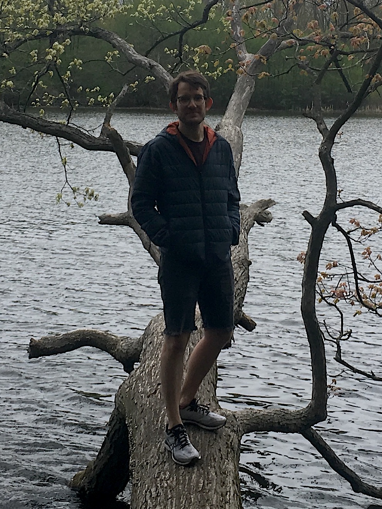

Devlin Mallory

I'm a postdoc in the math department at the University of Utah, studying algebraic geometry and commutative algebra. Recently, I've been thinking about positivity properties of tangent bundles of Fano manifolds in relation to differential properties of their section rings, and connections to positive characteristic phenomena such as finite F-representation type. I'm also interested in applications of arc spaces to the study of singularities.
I am also currently co-organizing Utah's Algebraic Geometry Seminar with Alicia Lamarche.
You can find my CV here.
Before this, I was a graduate student at the University of Michigan.
My adviser was Mircea Mustaţă.
Papers
Finite F-representation type for homogeneous coordinate rings of non-Fano varieties.
arXiv:2207:08966
Homogeneous coordinate rings as direct summands of regular rings.
arXiv:2206:03621
An explicit self-duality (with Nikolas Kuhn, Vaidehee Thatte, and Kirsten Wickelgren). To appear in Stacks Project Expository Collection, LMS Lecture Note Series, number 480, Cambridge University Press.
arXiv:2111:06848
Bigness of the tangent bundle of del Pezzo surfaces and D-simplicity.
Algebra & Number Theory 15(8), 2021
arXiv:2002.11010
Minimal log discrepancies of determinantal varieties via jet schemes.
Journal of Pure and Applied Algebra 225(2), 2021.
arXiv:1905.05379
Triviality of arc closures and the local isomorphism problem,
Journal of Algebra
544(47), 2020.
arXiv:1811.12577
Teaching
Fall 2022: Math 1220
Fall 2021: Math 1080